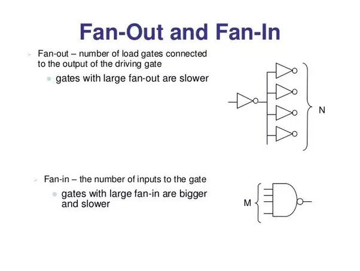
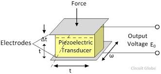
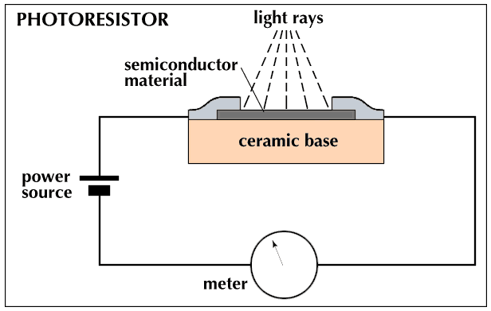

Basic 10
This is an introduction to basic Fan In/Out, Signal Level Conversion and Output in a Microcontroller set-up.
Fan In / Out
Fan-in: Maximum number of input a single gate can accept. Fan-out: Maximum number of load gate connected to the output of a single gate before signal degradation.

Voltage Limit
Voltage limit is defined by the maximum or minimum steady-state voltage limit. Meaning if the voltage given to the hardware is lower or higher than the voltage limit specified by the hardware, is might not work (under voltage) or overheat and burn (over voltage).
For example, the Esp32 is rated for a 2.2V to 3.6V operation voltage limit. Its GPIO is rated for 3.3V input/ouput
NOT 5V like Arduino
Transducers
Sensors and transducers are considered as energy conversion devices which receive a physical data such as temperature, pressure or light intensity and generate an electrical signal such as voltage depending on the type of transducer. Transducers can then be divided into two categories: Active or Passive
Active
An active transducer generates electrical signal in response to the physical parameter and does not require electrical energy in doing so.
Example: Piezoelectric sensor

Passive
A passive transducer requires external energy for it’s operation.
Example: Photoconductive Devices

Switch (On/Off)
The resistive passive sensor changes value (electrical) when the physical quantity (e.a. temperature, force, light etc) changes. These sensors can (generally) be used in combination with an extra resistor, like described above. The most common sensor is a switch. A switch is actually a resistor with two states: infinite and zero. When a switch has to be connected to the analog input of a sensor-interface, the same series resistor as mentioned before is needed.
A good value of the series resistor R1 will be between 10K-50K. In rest situation (switch is not pushed), the output will be +5V. When the switch is pushed, the resistance will be zero (shortcut to gnd) and the output voltage will be 0V.
Things to consider when choosing a transducer:
-
Linearity
-
Sensitivity
-
Dynamic range
-
Repeatability
-
Physical Size
Output
To interface your Microcontroller(ESP32) and your Electronics(Transducers and Actuators) using micropython make sure your have the micropython environment setup if not you can refer to one of our many guides. In this guide I will showing how to interface actuators primarily LED and a DC motor .
LED
Components needed:
-
ESP32
-
5mm LED (any color except blue or white)
-
Resistor (range 100-200ohms)
-
breadboard (optional)
do take note that ESP32 voltage output is 3.3V, LED voltage is normally 2V and our max current is assumed to be 20mA, hence using formula of R=V/I we obtain our optimal range but you can adjust the resistor value accordingly if so desired.
Schematic


Wire up the LED accordingly, I’m using pin 26 you can choose other pins if so wish
Code
All code is to be written in main.py file
LED On/Off
from machine import Pin
p26 = Pin(26, Pin.OUT)
p26.value(1)
#P26.value(0) to off
As you can see it’s just simple On/Off, how about adjusting the brightness?
LED On/Off + brightness
from machine import Pin
from machine import PWM
p26 = Pin(26, Pin.OUT)
pwm26 = PWM(p26, freq=1000, duty=512) #LED will turn on at this point
#freq can be adjusted accordingly
#duty value ranges from 0-1023 so 512 is 50% duty cycle
#duty value directly correlate with brightness
The adjusting of brightness is done via PWM you can read up more on Micropython site.
DC Motor
Components needed:
-
ESP32
-
5V power supply/battery
-
5V DC Motor
-
220 Ohm resistor
-
Transistor P2N2222A
-
Diode 1N4148
-
breadboard (optional)
If needed swap out the resistor, transistor, and diode by following this guide by electronics club.
Schematic


wire up the motor accordingly, instead of using pin 26 I’m using pin 21 here. The reasoning behind using a transistor and external power supply is that the motor have much higher current and voltage requirement than the ESP32 can supply, additionally the diode acts as a flyback diode to reduce back emf from the motor.
Code
to On/Off or control speed of motor, do refer back to the LED section as its the same. Do however change the pin number to whatever pin that your transistor is connected to..